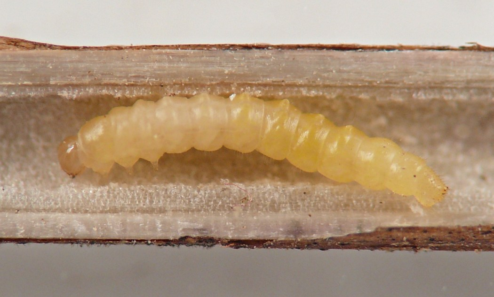
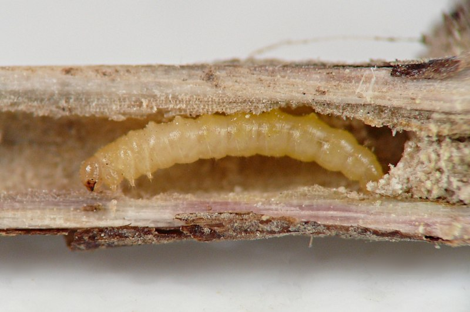
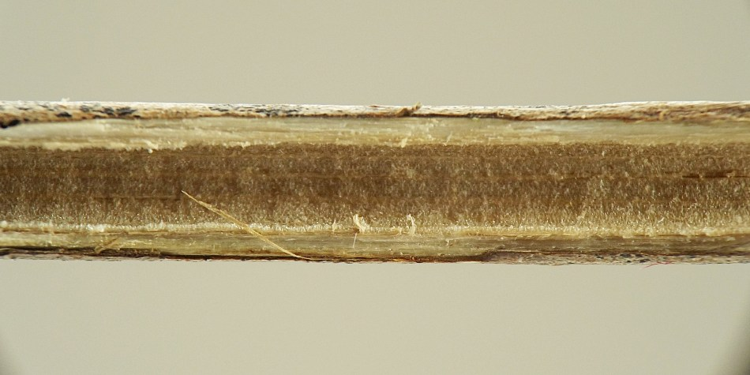
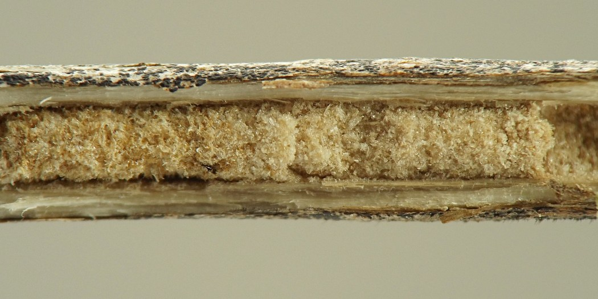
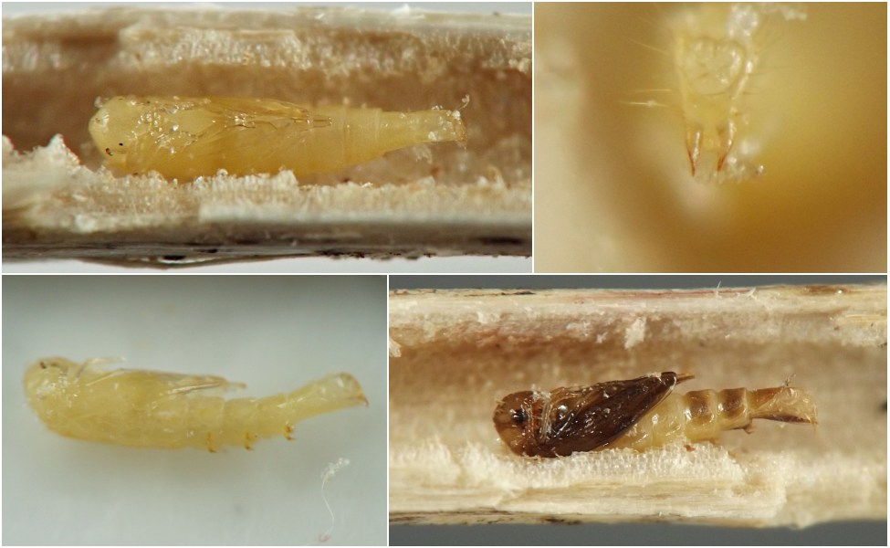
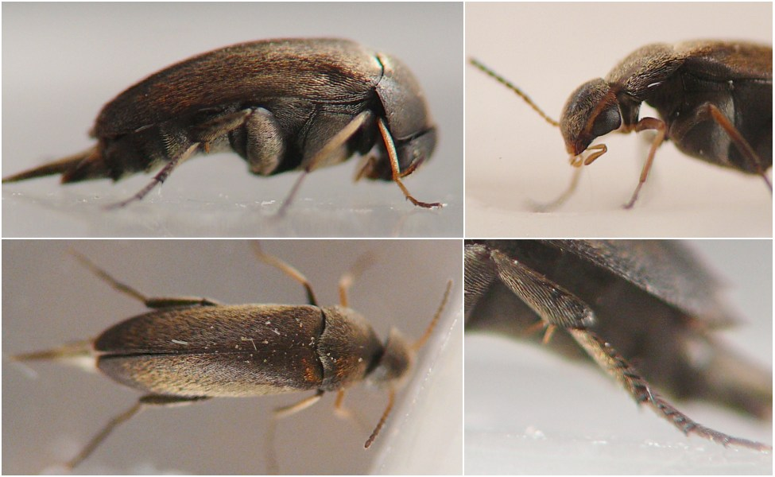
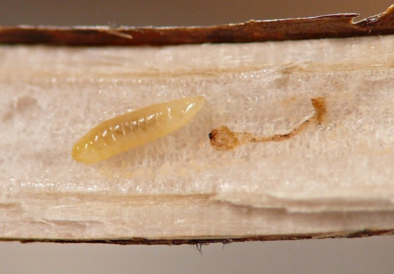

Stem borer (Coleoptera: Mordellidae) in Ageratina
| Record no.: | 0021 |
|---|---|
| Feeding guild: | Stem borer |
| Taxonomy: | Coleoptera: Mordellidae |
| Stages observed: | trace, larva, pupa, adult |
| Hosts in Ageratina: | A. altissima (white snakeroot) |
I have observed both whitish and yellowish mordellid larvae (all apparently belonging to this species) overwintering in their tunnels in dead stems of the host. Usually they were present in the lower portions of the stems near ground level, but in some shorter, less robust plants, I found them in the middle or even upper reaches of the stems. Their tunnels tended to be quite smooth-walled. In many cases a larva had packed an accumulation of very finely powdered whitish frass into the very base of the tunnel at or just above ground level.
Also, in mid-August I observed a larva tunneling in the lower portion of a petiole. Its tunnel was externally detectable as a brownish discoloration to the petiole. I found at least two other leaves with similarly affected petioles; in one case the tunnel appeared to stop abruptly at the petiole's attachment point to the stem and no larva was present, while in the other example, the tunnel began in the leaf midrib and proceeded down the petiole into the stem. An erotylid larva dwelled in the interior of the stem in the latter example, but given that I'd determined a mordellid larva to be responsible for a similar petiole tunnel in another A. altissima plant, I hypothesized that the erotylid larva was not responsible for the midrib and petiole feeding in this example, and that it had perhaps displaced a mordellid larva that had been responsible.
From the overwintering larvae, I reared several adults. Both larvae and adults showed a surprisingly large degree of variability in body length, and larval body color varied considerably as well, but reared adults were all fairly similar in coloration. The identity of these individuals is unknown as of 2025. Ford & Jackman (1996) reared Mordellistena rubrifascia from this host.
See also record 0727 and the Ageratina stem insects compilation.

 Prev
Prev
{kind=link}

{kind=link}

{kind=link}

{kind=link}

{kind=link}

{kind=link}

{kind=link}

{kind=link}
{kind=link}
{kind=link}

- Ford, E.J. and J.A. Jackman. 1996. New larval host plant associations of tumbling flower beetles (Coleoptera: Mordellidae) in North America. The Coleopterists' Bulletin 50(4): 361-368.[return to in-text citation]
Page created: February 9, 2026. Last update: March 17, 2026